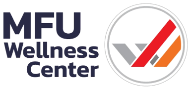
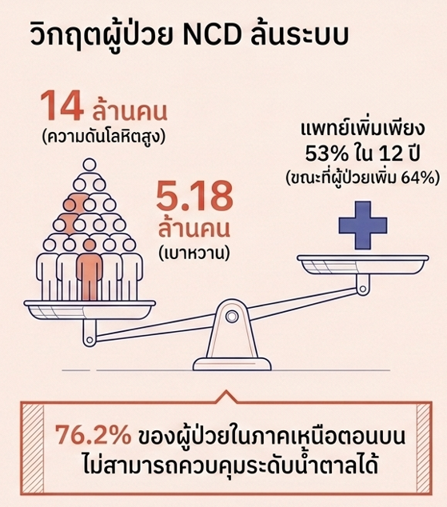
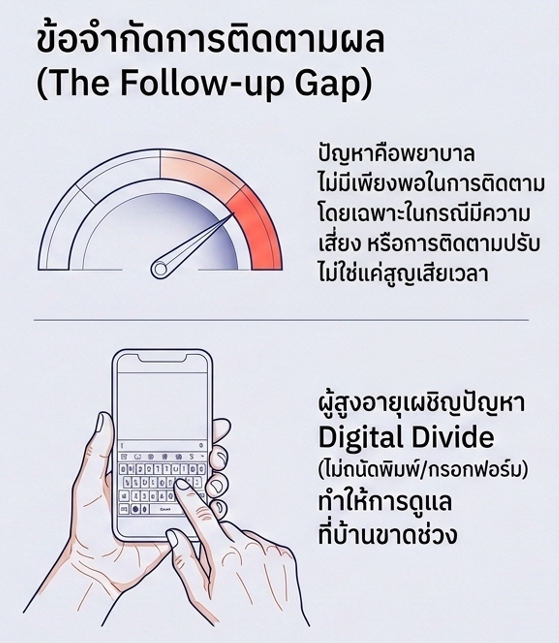
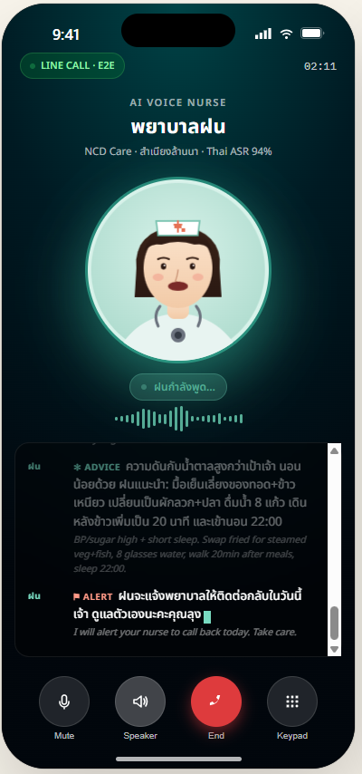
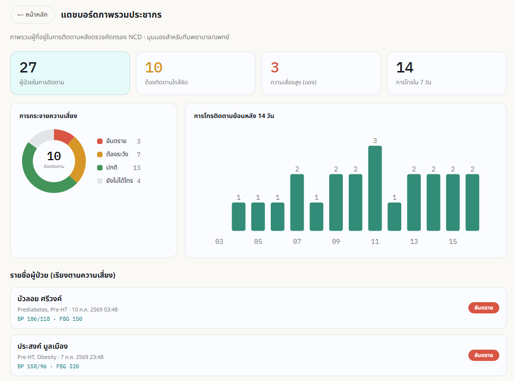

ระบบ AI ติดตามผู้ป่วย NCD ด้วยเสียงภาษาไทย
ปิดวงจรการดูแล — จากคำแนะนำของแพทย์ สู่บ้านผู้ป่วย และกลับมาเป็นข้อมูล
ติดตามอัตโนมัติผ่าน LINE OA · Email · SMS · สนทนาด้วยเสียงกับ “พยาบาลฝน”
แล้ววัดผลเป็น “แนวโน้มการทำตามคำแนะนำ” ที่แพทย์ใช้ตัดสินใจได้

ปัญหาไม่ใช่การวินิจฉัย — แต่คือช่วง 3 เดือนระหว่างนัด ที่ไม่มีใครรู้ว่าเกิดอะไรขึ้น


MFU Wellness Center ใช้ระบบนี้ดูแลผู้รับบริการอยู่แล้ว สิ่งที่ขอทุนคือการต่อยอด “การติดตามด้วยเสียง” เข้าไป
TRL 7
ระดับความพร้อมเทคโนโลยี
30,000
ผู้รับบริการที่รองรับ
26/26
กรณีทดสอบผ่าน UAT
6.90%
WER — ความแม่นยำ ASR ไทย
ระบบปัจจุบัน (Live)
ระบบที่ใช้เทคนิคเดียวกัน: สัมภาษณ์ผ่านวิดีโอ 141,000 ครั้ง · เสถียร 99.7%
ส่งมอบใหม่จากทุนนี้
ทุกขั้นตอนเกิดขึ้นอัตโนมัติ โดยมีแพทย์เป็นผู้อนุมัติก่อนข้อมูลเข้าเวชระเบียนเสมอ
จุดตั้งต้น
ผู้ป่วยได้รับรายงานประเมินสุขภาพพร้อมคำแนะนำที่แพทย์ตรวจและอนุมัติแล้ว ระบบเก็บคำแนะนำนี้ไว้เป็น Care Plan
LINE OA · Email · SMS
ระบบส่งคำเชิญสัมภาษณ์ตามตารางติดตาม ผ่านช่องทางที่ผู้ป่วยสะดวก
เฉพาะบุคคล
ผู้ป่วยกดลิงก์แล้วพูดคุยด้วยเสียง ไม่ต้องพิมพ์ ไม่ต้องกรอกฟอร์ม รองรับสำเนียงล้านนา
มีแพทย์กำกับ
AI สรุปบทสนทนาเป็นรายงานมีโครงสร้าง แล้วบันทึกลงเวชระเบียน
สิ่งที่ไม่เคยมีมาก่อน
แพทย์เห็นแนวโน้มการทำตามคำแนะนำรายบุคคลเพื่อปรับแผนการดูแลครั้งถัดไป
ปรับคำแนะนำจากแนวโน้มที่เห็น
หัวใจของระบบ: ผู้ป่วยไม่ต้องเรียนรู้อะไรใหม่ — แค่รับสายแล้วพูด · บุคลากรไม่ต้องทำงานเพิ่ม · ข้อมูลไหลกลับเข้ามารายงานเอง
ลดเวลาบันทึกเวชระเบียน 2–5 นาที/ราย · ลดเวลาซักประวัติ 5–10 นาที/ราย
“พยาบาลฝน” ประกอบบทสนทนาใหม่ทุกรอบ จากคำแนะนำของแพทย์ + สิ่งที่ผู้ป่วยเล่าไว้ครั้งก่อน

สนทนาด้วยเสียงผ่าน LINE Call (E2E)
ผลลัพธ์ — บทสนทนาที่ต่อเนื่องจากครั้งที่แล้ว
“ครั้งที่แล้วคุณป้าบอกว่าเดินได้ 2 วันต่อสัปดาห์ แล้วเข่าเจ็บใช่ไหมคะ
สัปดาห์นี้เดินได้กี่วันคะ ถ้าเข่ายังเจ็บ ฝนมีท่าที่เบากว่านี้แนะนำนะคะ”
แทนที่จะเป็น: “วันนี้คุณออกกำลังกายหรือไม่?” — คำถามเดิมที่ผู้ป่วยเลิกตอบภายใน 2 สัปดาห์
ทำไมถึงสำคัญ
ผู้ป่วยรู้สึกว่า “มีคนจำได้” จึงยอมคุยต่อเนื่อง — อัตราการตอบกลับที่ยั่งยืน คือเงื่อนไขของข้อมูลแนวโน้มที่เชื่อถือได้
ทุกวันนี้แพทย์เห็นแค่ค่าตรวจครั้งถัดไป — ระบบนี้ทำให้เห็น “พฤติกรรมระหว่างทาง” ที่ทำให้ค่านั้นเปลี่ยน

ระบบจัดกลุ่มผู้ป่วยที่การทำตามคำแนะนำลดลงต่อเนื่อง ให้พยาบาลโทรหาเฉพาะคนที่ต้องโทรจริง ๆ
เทียบคำแนะนำกับพฤติกรรมที่เกิดขึ้นจริง จึงปรับแผนจากหลักฐาน ไม่ใช่จากการเดา
การติดตามเปลี่ยนผลลัพธ์สุขภาพจริงหรือไม่
เป้าหมายผลลัพธ์ของโครงการ
28.3%→≥35%
มูลค่าผลกระทบที่ประเมินได้ ≥ 28.2 ล้านบาท
เสียงใส่ใจ — AI Coach สำหรับผู้ป่วยโรคไม่ติดต่อเรื้อรัง (NCD)
ระดับความพร้อม (TRL)
7 → 9
เมื่อสิ้นสุดโครงการ
รายได้ SaaS ต่อโรงพยาบาล
0.6–1.2 ลบ.
ต่อปี · ภาครัฐ 2–4 แสน
ตลาดรวมในไทย (TAM)
8,400 ลบ.
ต่อปี · รพ. 1,400 แห่ง
การเติบโตของตลาด
20.8%
CAGR AI Healthcare ไทย
คู่แข่งต่างประเทศ — Nuance DAX · Abridge · Suki AI · Nabla Copilot
ไม่รองรับภาษาไทย และไม่รองรับสำเนียงล้านนา
เราพัฒนา ASR ภาษาไทยทางการแพทย์เอง วัดได้ที่ WER 6.90%
ไม่เชื่อมต่อระบบเวชระเบียนของไทย
ระบบเราเชื่อม HIS ที่ใช้จริงใน รพ. ไทย และคืนข้อมูลกลับเวชระเบียนอัตโนมัติ
ราคา 500–2,000 USD ต่อเดือน
โครงสร้างราคาของเราออกแบบให้ รพ. รัฐไทยจ่ายไหว พร้อม Subsidized Tier
เป็นเครื่องมือถอดเสียงให้แพทย์ ไม่ใช่ติดตามผู้ป่วย
เราติดตามผู้ป่วยที่บ้านเชิงรุก และวัดการทำตามคำแนะนำเป็นแนวโน้ม
สำนักวิชาเทคโนโลยีดิจิทัลประยุกต์ (ADT) · มหาวิทยาลัยแม่ฟ้าหลวง — มหาวิทยาลัยของรัฐตาม พ.ร.บ. 2541
ทีมวิจัย
หัวหน้าโครงการ (PI)
คณบดีสำนักวิชาเทคโนโลยีดิจิทัลประยุกต์
Co-PI / หัวหน้าทีม AI
AI/ML · การรู้จำเสียง · การประมวลผลภาษาธรรมชาติ
Clinical Lead
กำกับความถูกต้องทางคลินิกและการอนุมัติคำแนะนำ
ความพร้อมด้านโครงสร้างพื้นฐาน
งบประมาณและระยะเวลา
งบประมาณที่ขอรับ
9,500,000บาท
ระยะเวลาโครงการ
1ปี
แผนการดำเนินงาน
ขออนุมัติจริยธรรม (IRB) · ปรับแต่งระบบเสียง · ทดลอง 50 ราย · จัดทำ Business Plan และโครงสร้างราคา SaaS
ขยายการทดลองเป็น 200 ราย · พัฒนา AI Coach เต็มรูปแบบ · นำร่องลูกค้ารายแรก
ประเมินผลและตีพิมพ์ · ปิดสัญญา SaaS รายปี · ยอดขายปีแรก ≥ 600,000 บาท
สิ่งที่ขอ: ทุน 9.5 ล้านบาท 1 ปี เพื่อเปลี่ยนระบบที่ใช้งานอยู่แล้ว
ให้กลายเป็นการติดตามที่วัดผลได้ และขายได้จริงในปีแรก